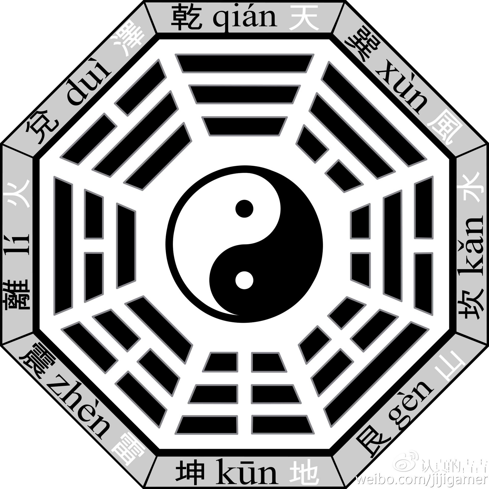
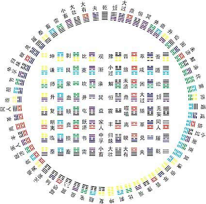

传为伏羲观察天地万物所创。伏羲在洛阳孟津遇龙马负图，
并根据龙马背负的河图演绎出八卦 ,被誉为“中国先民心灵思维的最高成就”，
是中华文明的第一个高峰和里程碑。
八卦由阳爻“—”与阴爻“- -”组成八个三画卦形，
分别象征天（乾）、地（坤）、风（巽）、雷（震）、水（坎）、火（离）、山（艮）、泽（兑)。
其通过阴阳排列推演自然规律，与"阴阳五行"共同构成中国古代阐释宇宙规律的认知体系，
组合成六十四卦后应用于占卜、中医（如掌诊定位）、武术等领域，构成易学体系的核心框架.
|
|
| 五行 | 八卦 | 神仙体系 | 洞天福地 | 历史 传承 | 返回首页 | |
| 八卦——体悟天地的变化 | |
|  | 八卦是中国古代哲学符号系统，最早见于《周易·系辞下》， 传为伏羲观察天地万物所创。伏羲在洛阳孟津遇龙马负图， 并根据龙马背负的河图演绎出八卦 ,被誉为“中国先民心灵思维的最高成就”， 是中华文明的第一个高峰和里程碑。 八卦由阳爻“—”与阴爻“- -”组成八个三画卦形， 分别象征天（乾）、地（坤）、风（巽）、雷（震）、水（坎）、火（离）、山（艮）、泽（兑)。 其通过阴阳排列推演自然规律，与"阴阳五行"共同构成中国古代阐释宇宙规律的认知体系， 组合成六十四卦后应用于占卜、中医（如掌诊定位）、武术等领域，构成易学体系的核心框架. |
|  | |